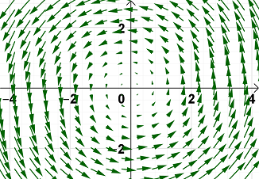
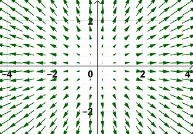
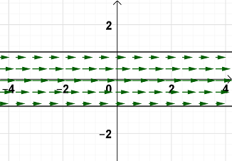

On this page, you will learn to:
- Identify and sketch vector fields.
- Determine gradient fields.
A vector field in \(\mathbb{R}^2\) is a function defined over a region \(D\) in the \(xy\)-plane that assigns to each point \((x, y)\) in \(D\) a vector \(\vec{F}(x, y)\).
| Description | Graph |
|---|---|
|
Rotation Vector Field \[\vec{F}(x,y) = \langle -y, x \rangle\]A rotation vector could be used to describe the flow of water in a sink around the drain. |
 |
|
Radial Vector Field \[\vec{F}(x,y) = \langle x, y \rangle\]A radial vector field could be used to describe a repulsive (or attractive) force, where all vectors point outward (or inward) from (to) a central point. |
 |
|
Flow Vector Field \[\vec{F}(x,y) = \langle \frac{1}{y2 + 1}, 0 \rangle\]A flow vector field could be used to describe the flow of a fluid through an object, such as water through a hose or blood through a vein, or even traffic flow on a road. |
 |
Similarly, a vector field in \(\mathbb{R}^3\) is a function defined over a region \(E\) in 3D space that assigns to each point \((x,y,z)\) in \(E\) a vector \(\vec{F}(x,y,z)\). Such a vector field could describe the air current across an airplane wing or within a hurricane, the radiation of heat from a light source or the temperature fluxuation in a solid, or a gravitational, magnetic, force, or energy field.
The vector field \(\vec{F}\) such that \(\vec{F} = \nabla f\) for a differentiable function \(f\) is called a gradient field. In \(\mathbb{R}^2\) and in \(\mathbb{R}^3\), we get the following formulas.
\[ \begin{aligned} \vec{F}(x,y) &= \nabla f(x,y) = \langle f_x(x,y), f_y(x,y)\rangle \\[4pt] \vec{F}(x,y,z) &= \nabla f(x,y,z) = \langle f_x(x,y,z), f_y(x,y,z), f_z(x,y,z)\rangle \end{aligned} \]In other words, a gradient field is a vector field defined by the gradient of a scalar function \(f\). Its component functions are the partial derivatives of the scalar function \(f\).
One thing that makes gradient fields so special is that since the vectors in the field are all gradient vectors, they will all be orthogonal (or perpendicular) to the level curves of the contour map of the function \(f\). This is illustrated in the following video.
We say a vector field \(\vec{F}\) is conservative if it is the gradient of some scalar function \(f\). In other words, there is some scalar function \(f\) such that \(\vec{F} = \nabla f\) and we call \(f\) the potential function for \(\vec{F}\).
We will look at conservative fields in more detail in another lesson as well as how we can determine the potential function of a conservative field.